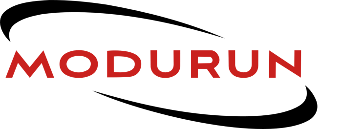
ModuRun
A modular running belt that stays put, so runners can leave the vest at home.

- Brief
- Live brief for a running start-up
- Scope
- Product, brand and manufacture
- Fit
- 5th to 95th percentile
- Landed cost
- £17 per unit
The best running belt on the market
This was a live brief. A founder planning a running start-up came into the university to brief us. At the time there was no running belt that runners rated, and he wanted his company to launch with the best one.
The belt had to work for all runners and replace the need for a hydration vest on runs of up to 30 km. As well as the product, I had to create the company's name, logo and brand, and work out how the belt would be manufactured.
Key criteria: stability, capacity, accessibility, durability, breathability, adjustability, aesthetics and sustainability.
Why belts bounce
Watching runners with existing belts showed a second flaw. With the bottles and storage all at the front, the weight is uneven, tiring over a long run and awkward when you bend down to tie a shoe.
The most useful finding came from fluid dynamics. Water in a half-empty bottle sloshes, and when the slosh matches your stride it tugs the belt up and down. Oil tankers deal with the same problem using baffles, walls that split the tank into shorter sections. A shorter bottle works the same way: the water has less distance to build up speed, so each tug is smaller. That led to a soft flask cut down to 180 mm tall that tucks into the belt instead of digging into the runner.
From clips to holes
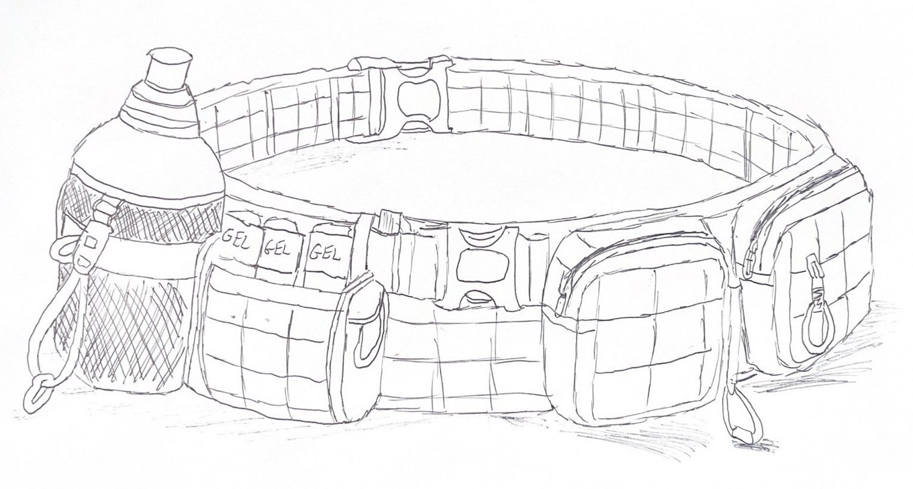
Concept 1
Military-grade clips and plenty of pockets, but rigid and uncomfortable, with room for only one bottle and the weight off to one side.
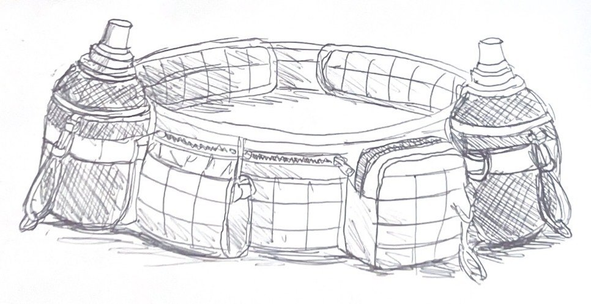
Concept 2
Two bottles and a Velcro strap in place of the clips. It fitted securely, but at 5 inches tall it was bulky and restricted movement.
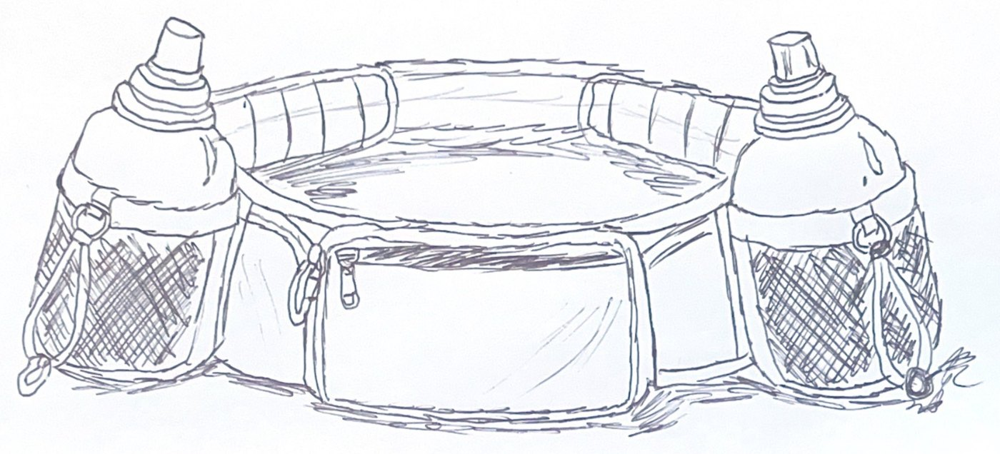
Concept 3
A slimmer 4.5-inch belt with a mesh lining and one large pocket for a phone or light rain jacket. The best balance of stability and comfort.
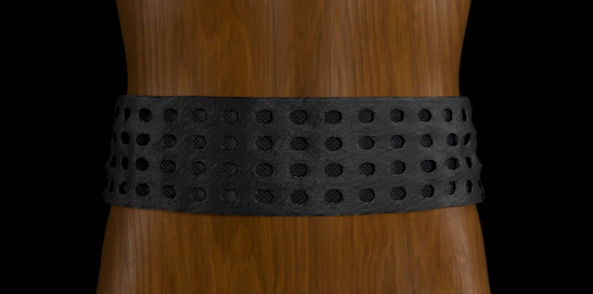
Concept 4, the final direction
A perforated belt. Modules hook into the holes, so pockets and bottles can sit anywhere along it.
Modular by design
Runners choose which modules they want and where they go: small pockets for keys and gels, a large pocket for a phone or rain jacket, and two soft ModuRun flasks. Parachute cord running round the belt gives a micro-adjust fit from 65 to 115 cm, and patches let runners personalise it.
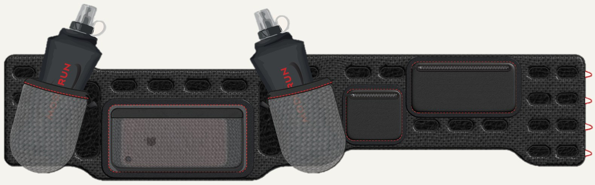
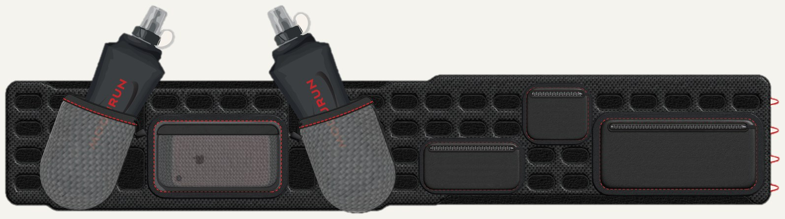
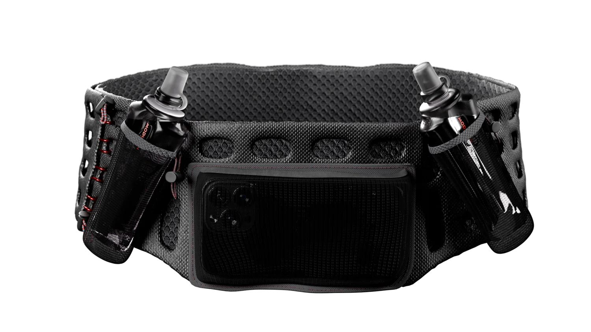
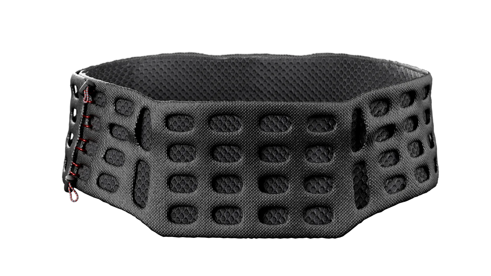
Made without seams
I costed the belt part by part, from the PA6 and elastane shell to the YKK zips and the labour. Instead of stitching, the edges are ultrasonically welded and the stress points bonded with TPU film, so there are no raised seams to rub against wet skin. The soft flasks are RF-welded TPU with an injection-moulded neck.
Name, logo and merchandise
The ring around the name follows the shape of a running belt. The lettering is custom, based on Aviano Sans, so no other brand's name will look like it.
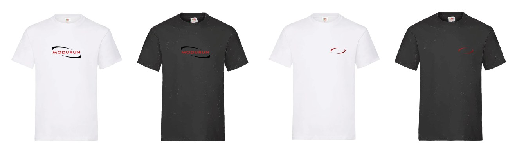
The belt ships in a plastic-free cardboard mailer, with its contents and specifications printed inside.

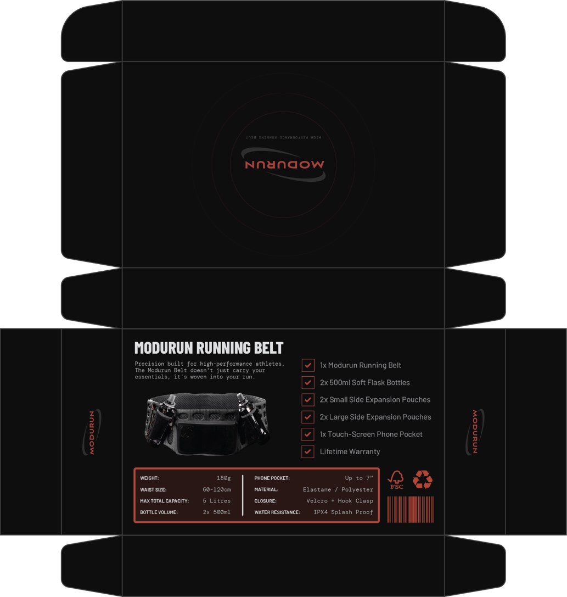
Run More Miles
I designed posters for Instagram Stories to promote the belt. The plan was to give belts and modules to the fastest runners at running events, and to launch a "Run More Miles" campaign where runners earn points for every mile, redeemable as discount codes in the ModuRun store.